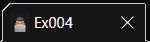

Favicons são os ícones que aparecem ao lado do título do site, localizado acima da barra de URL do site.
Para que o favicon seja mostrado no site, basta adicionar o arquivo (.ico, .png ou .svg) na pasta do projeto.
Depois disso, é necessário adicionar uma tag <link> na área <head> do código, digitando o nome do arquivo, geralmente "favicon.ico" no href.
Por exemplo: <link rel="shortcut icon" href="favicon.ico" type="image/x-icon">